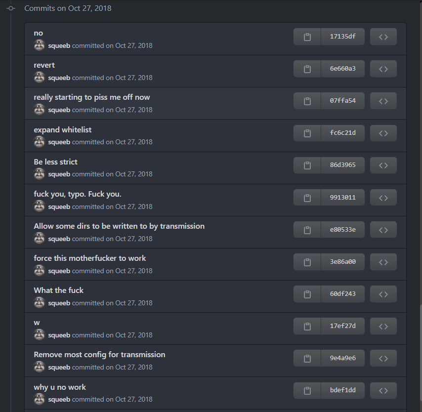

On this page you can find some personal notes on the use of Git and GitHub. Though the notes themselves were created by me, the content in them is the result of courses that I've taken on the subject, books I've read, and countless YouTube videos, blog posts and StackOverflow questions. These notes should not be considered as a replacement for engaging with those resources.
Some resources that I especially recommend and whose influence can be found all across these notes are:
- The ultimate Git course by Mosh Hamedani which you can find here. I personally consider this to be THE course on Git and GitHub for newcomers or people who have been learning-by-doing.
- Happy Git with R by Jenny Bryan which you can find here. Don't be fooled by its title, even if you are not an R programmer this book covers everything on how to get started, from download and installation, to setting up SSH keys and PATs, to basic workflows, and much more.
- Several YouTube channels that have helped me immensely from time to time are Corey Shafer, The Net Ninja, The Modern Coder, Web Dev Simplified, GitKraken's YouTube channel.
- The official documentation for Git and GitHub. These can be hard to navigate at first.
- Oh Shit, Git!?! A funny guide into how to solve some of the most common mistakes we've all made when we first started with Git.
Jump to...
Read up! Enjoy! And when things don't work...worry not, for you are not alone...
